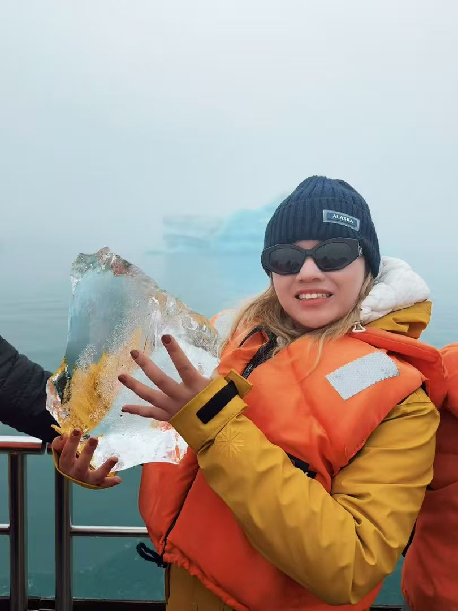
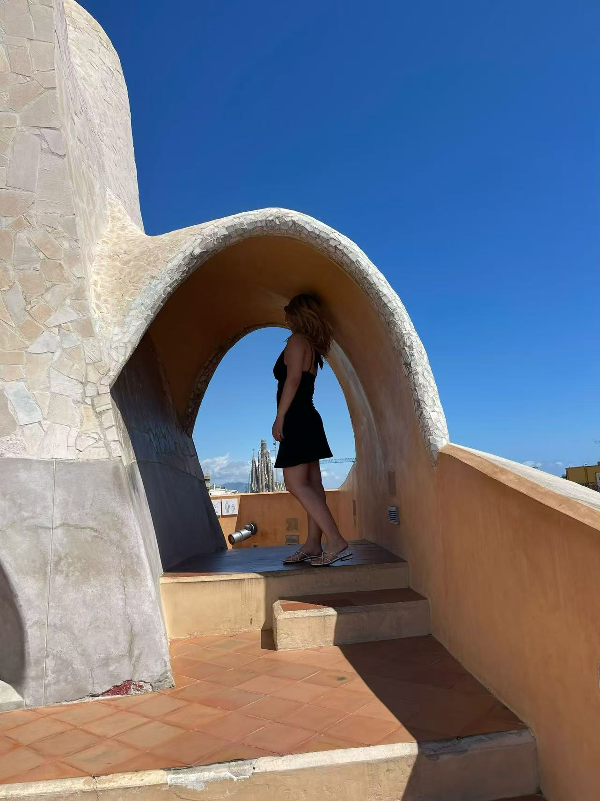
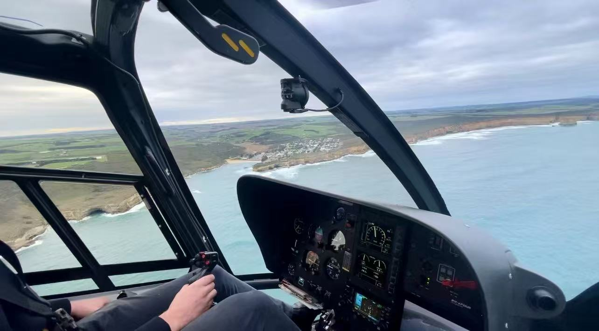

01
01
Human lens
Psychology trained me to look for motivation, friction, trust, and context behind the numbers.
Life side
I like places that change my perspective: coastlines, architecture, ice, and aerial views. It probably explains why I enjoy analysis too: zoom in, zoom out, find the pattern.



01
Psychology trained me to look for motivation, friction, trust, and context behind the numbers.
 02
02
I like small moments where stories come out naturally, usually around a table.
I enjoy learning new tools, building small systems, and making messy things easier to use.